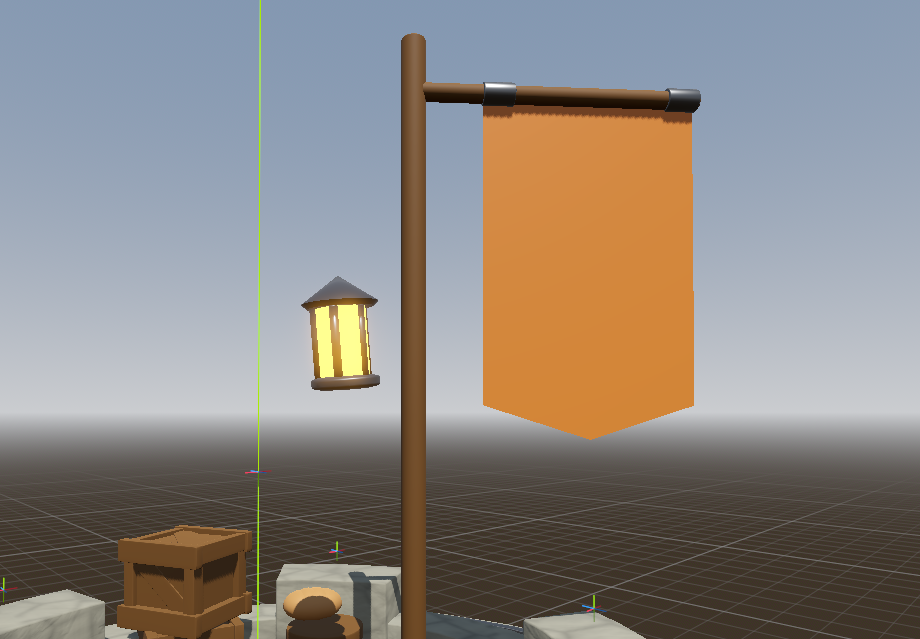

3D Backlog¶
Everything that lives in the 3D world: models, rigs, animation, VFX, shaders, lighting, atmosphere, and the tower itself. The catch-all Backlog still holds the master list; this page is for sorting the 3D work into one place.
Status tags: Done shipped · WIP in progress · Todo not started · Idea undecided · Check may already be done.
Lighting & atmosphere¶
-
Todo Lantern on the flag post (night lighting) — the tower reads too dark at night. Add a lantern to the flag post as a warm light source. Needs some kind of hook / bracket / arm off the post to hang the lantern from. (Status 2026-07-19: an interim light is placed in-game; this prop finalizes it. The "lights next to each wizard" idea joins this same lighting pass once the prop lands.)
- Suggestion: reuse the already-made rope to hang it, but decimate it first so it's not so vertex-dense.

-
[ ]
Tower (mesh, brick shell, damage states)¶
-
Todo Cracked brick variants for damage states — model bricks that are cracked into pieces (grouped), so damaged bricks show real fracture geometry instead of just the current colour-tint damage indication. Progressive: swap to more-broken variants as a brick's HP drops.
-
[ ]
Enemies (models, rigs, animation)¶
- [ ]
Items & props (3D)¶
-
Idea 3D windrose model — replace the flat-drawn HUD windrose (wave-direction compass, bottom-right) with an actual little 3D compass prop rendered in the corner. The 2D one works; this is a looks upgrade.
-
Todo ~6 different small throwable rocks (RBL replacement — needed before launch). The rock item currently uses 6 placeholder rocks from a Unity Asset Store pack we are NOT licensed for (see the Backlog ship-prep /
Imported/RollCall/RBL_ASSETS.md), so we need our own set. Brief:- Around 6 loose rocks, each a distinct silhouette (round, flat, chunky, angular...) so a stream of thrown rocks doesn't repeat.
- Low-poly, faceted style, ~500 tris or less each; any size is fine (the game auto-scales them to 0.4m).
- One shared texture is enough — greyscale with worn-edge highlights works great, the game tints it.
- Double duty: the ICE item reuses the exact same rock models with an ice shader, so this one ask covers both the Rock and Ice item visuals. Dropping the models into the picker scene is a 1-minute wire-up.
VFX & shaders¶
- Todo "Frozen IN ice" effect — a fully
frozen/deep_frozenenemy should read as encased in a solid block of ice (crystal shell over the body, refraction/frosted-glass look), not just glowing. Interim (2026-07-22): frozen enemies show only the StatusFX ice Aura (vfx_status_ice.tscn, Particles stripped) as a placeholder; theslow/"frosted" state already gets the full ice overlay + effect. This item is the real ice-block visual to replace that placeholder.
Hybrid-workflow cleanup (externalize code-built visuals) — do later, not urgent¶
Audit (2026-07-18) against the "code for systems, scenes for tunable visuals" rule. The codebase mostly follows it; these are the genuine stragglers — whole visual assets built in code with .new() and no editable resource behind them. Deferred deliberately: fine to leave while iterating fast, revisit when settling the look. Good patterns to copy: night_lights → tiki_torch.tscn, spider_fire_process.tres, burning_ash/billboard_fog (@tool + @export).
- Todo
Autoloads/fluid_field.gd— oil/flame/frost "look" block + the blood & slime bubble color palettes hidden inside spawn functions. Lift to aFluidLookresource /@exports (sim math stays code). - Todo
Autoloads/fireflies.gd— whole GPUParticles swarm + fade gradient built in code, no scene. Move emitter tofireflies.tscn; keep only the night-fade driver. - Todo
Autoloads/day_night_cycle.gd— ~20-color sky/sun/moon/twilight palette in code. Extract to aDayNightPalette.tres; orbit/threshold math stays code. - Todo
VFX/Scripts/fx_wave_signal.gd— the entire wave flare (3 lights + 2 particle systems + materials) via.new(), no scene. Author awave_signal.tscn; keep the lob-arc math. - Todo
VFX/Scripts/fx_sparks.gd— full particle material rebuilt in_ready()behind an emptyfx_sparks.tscn. Author the material/mesh on the node. - Todo
enemy.gd_make_blood_fx()— bleed-drip particle (color/count/gravity/scale) in code, no scene. Extract to ablood_drip.tscn(mirrorspider_fire_process.tres). - Todo
Levels/Scripts/player_tower.gd— the goblin archer + arrow built entirely with.new()(body/hat/shaft colors + sizes). Move toplayer_tower.tscn; targeting logic stays code. - Todo Quick win — impact-burst colors:
rock/fire/poison/frost_effect.gdinlineVfx.spawn_impact(..., Color(...), power)whileDamageEffectalready readsitem_data.ui_colorand everyItemData.trescarries one. Add@export var burst_coloror readui_color— kill the four inline literals. (Pure code, no open-scene risk.) - Todo Lower priority:
spike_ring.gd(code-built cone + metal material →spike.tscn),web_shooter.gdstrand color/width (@export),shop_style.gd(UI theme in code →Theme.tres), minor tints intower_core.gddebris /coin_pile.gdcore finish.
Environment (terrain, foliage, skybox)¶
-
Todo Flag design instead of a plain colour — the banner on the flag post is currently a flat solid orange; give it an actual flag design / emblem (crest, sigil, pattern) via a texture or material. See the lantern concept shot for the current plain banner.
-
[ ]
{kind=link}
Wizards & cart (3D)¶
- [ ]
Art direction / style pass¶
- [ ]